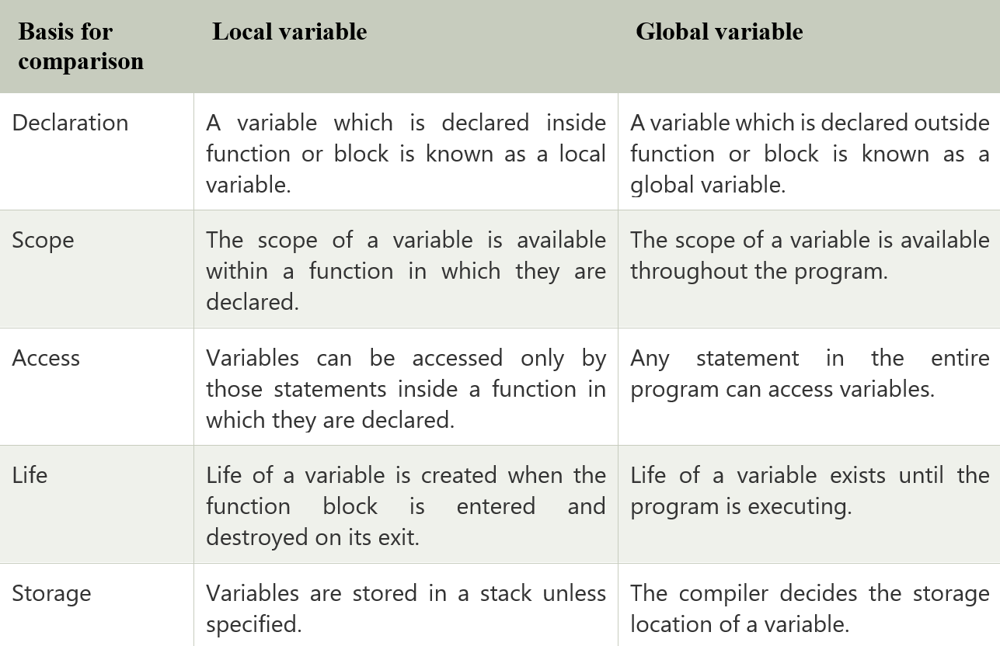
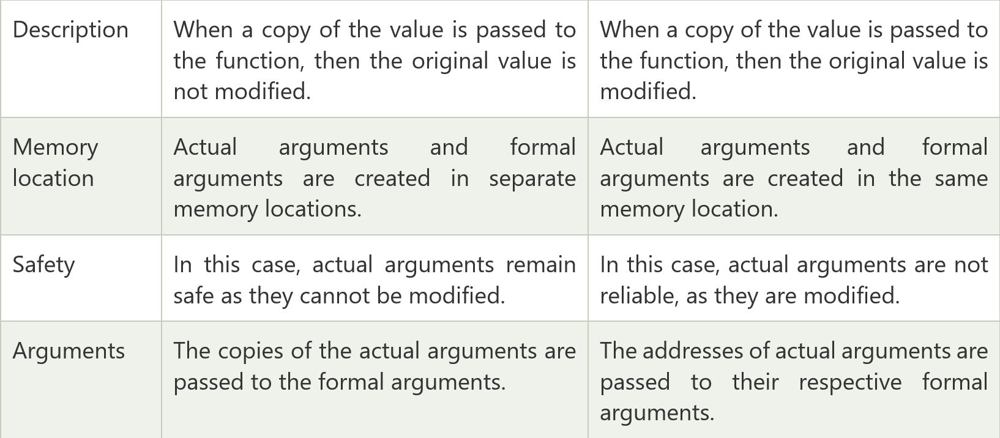
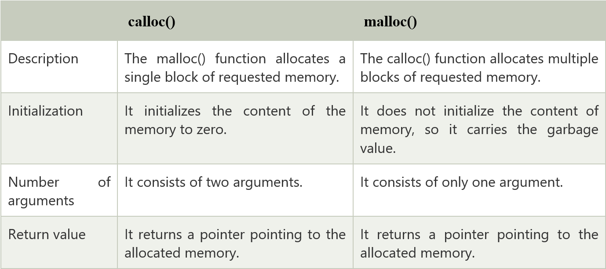

C is a mid-level and procedural programming language. The Procedural programming language is also known as the structured programming language is a technique in which large programs are broken down into smaller modules, and each module uses structured code. This technique minimizes error and misinterpretation.
C is known as a mother language because most of the compilers and JVMs are written in C language. Most of the languages which are developed after C language has borrowed heavily from it like C++, Python, Rust, javascript, etc. It introduces new core concepts like arrays, functions, file handling which are used in these languages.
C is called a mid-level programming language because it binds the low level and high -level programming language. We can use C language as a System programming to develop the operating system as well as an Application programming to generate menu driven customer driven billing system.
Dennis Ritchie
C language was developed in 1972 at bell laboratories of AT&T.
o Simple: C is a simple language because it follows the structured approach, i.e., a program is broken into parts
o Portable: C is highly portable means that once the program is written can be run on any machine with little or no modifications.
o Mid Level: C is a mid-level programming language as it combines the low- level language with the features of the high-level language.
o Structured: C is a structured language as the C program is broken into parts.
o Fast Speed: C language is very fast as it uses a powerful set of data types and operators.
o Memory Management: C provides an inbuilt memory function that saves the memory and improves the efficiency of our program.
o Extensible: C is an extensible language as it can adopt new features in the future.
printf(): The printf() function is used to print the integer, character, float and string values on to the screen.
Following are the format specifier:
o %d: It is a format specifier used to print an integer value.
o %s: It is a format specifier used to print a string.
o %c: It is a format specifier used to display a character value.
o %f: It is a format specifier used to display a floating point value.
scanf(): The scanf() function is used to take input from the user.

Following are the uses of a static variable:
o A variable which is declared as static is known as a static variable. The static variable retains its value between multiple function calls.
o Static variables are used because the scope of the static variable is available in the entire program. So, we can access a static variable anywhere in the program.
o The static variable is initially initialized to zero. If we update the value of a variable, then the updated value is assigned.
o The static variable is used as a common value which is shared by all the methods.
o The static variable is initialized only once in the memory heap to reduce the memory usage.
Uses of C function are:
o C functions are used to avoid the rewriting the same code again and again in our program.
o C functions can be called any number of times from any place of our program.
o When a program is divided into functions, then any part of our program can easily be tracked.
o C functions provide the reusability concept, i.e., it breaks the big task into smaller tasks so that it makes the C program more understandable

An Array is a group of similar types of elements. It has a contiguous memory location. It makes the code optimized, easy to traverse and easy to sort. The size and type of arrays cannot be changed after its declaration.
Arrays are of two types:
o One-dimensional array: One-dimensional array is an array that stores the elements one after the another.
Syntax:
1. data_type array_name[size];
o Multidimensional array: Multidimensional array is an array that contains more than one array.
Syntax:
1. data_type array_name[size];
A pointer is a variable that refers to the address of a value. It makes the code optimized and makes the performance fast. Whenever a variable is declared inside a program, then the system allocates some memory to a variable. The memory contains some address number. The variables that hold this address number is known as the pointer variable.
o Accessing array elements: Pointers are used in traversing through an array of integers and strings. The string is an array of characters which is terminated by a null character '\0'.
o Dynamic memory allocation: Pointers are used in allocation and deallocation of memory during the execution of a program.
o Call by Reference: The pointers are used to pass a reference of a variable to other function.
o Data Structures like a tree, graph, linked list, etc.: The pointers are used to construct different data structures like tree, graph, linked list, etc.
A pointer that doesn't refer to any address of value but NULL is known as a NULL pointer. When we assign a '0' value to a pointer of any type, then it becomes a Null pointer.
A pointer which can access all the 16 segments (whole residence memory) of RAM is known as far pointer. A far pointer is a 32-bit pointer that obtains information outside the memory in a given section.
o If a pointer is pointing any memory location, but meanwhile another pointer deletes the memory occupied by the first pointer while the first pointer still points to that memory location, the first pointer will be known as a dangling pointer. This problem is known as a dangling pointer problem.
o Dangling pointer arises when an object is deleted without modifying the value of the pointer. The pointer points to the deallocated memory.
In case of a pointer to pointer concept, one pointer refers to the address of another pointer. The pointer to pointer is a chain of pointers. Generally, the pointer contains the address of a variable. The pointer to pointer contains the address of a first pointer
o In case of static memory allocation, memory is allocated at compile time, and memory can't be increased while executing the program. It is used in the array.
o The lifetime of a variable in static memory is the lifetime of a program.
o The static memory is allocated using static keyword.
o The static memory is implemented using stacks or heap.
o The pointer is required to access the variable present in the static memory.
o The static memory is faster than dynamic memory.
o In static memory, more memory space is required to store the variable.
o In case of dynamic memory allocation, memory is allocated at runtime and memory can be increased while executing the program. It is used in the linked list.
o The malloc() or calloc() function is required to allocate the memory at the runtime.
o An allocation or deallocation of memory is done at the execution time of a program.
o No dynamic pointers are required to access the memory.
o The dynamic memory is implemented using data segments.
o Less memory space is required to store the variable.
1. malloc()
o The malloc() function is used to allocate the memory during the execution of the program.
o It does not initialize the memory but carries the garbage value.
o It returns a null pointer if it could not be able to allocate the requested space.
Syntax:
1. ptr = (cast-type*) malloc(byte-size)
2. calloc()
o The calloc() is same as malloc() function, but the difference only is that it initializes the memory with zero value.
Syntax:
1. ptr = (cast-type*)calloc(n, element-size);
3. realloc()
o The realloc() function is used to reallocate the memory to the new size.
o If sufficient space is not available in the memory, then the new block is allocated to accommodate the existing data.
Syntax:
1. ptr = realloc(ptr, newsize);
In the above syntax, ptr is allocated to a new size.
4. free():
o The free() function releases the memory allocated by either calloc() or malloc() function.
Syntax:
1. free(ptr);

o The structure is a user-defined data type that allows storing multiple types of data in a single unit. It occupies the sum of the memory of all members.
o The structure members can be accessed only through structure variables.
o Structure variables accessing the same structure but the memory allocated for each variable will be different.
o The union is a user-defined data type that allows storing multiple types of data in a single unit. However, it doesn't occupy the sum of the memory of all members. It holds the memory of the largest member only.
o In union, we can access only one variable at a time as it allocates one common space for all the members of a union.
In C, every local variable of a function is known as an automatic (auto) variable. Variables which are declared inside the function block are known as a local variable. The local variables are also known as an auto variable. It is optional to use an auto keyword before the data type of a variable. If no value is stored in the local variable, then it consists of a garbage value.
The sprintf() stands for "string print." The sprintf() function does not print the output on the console screen. It transfers the data to the buffer. It returns the total number of characters present in the string.
Yes, we can compile, but it can't be executed.
But, if we use #define, we can compile and run a C program without using the main() function.
For example:
1. #include"stdio.h"
2. #define start main
3. void start() {
4. printf("Hello");
5. }
The Token is an identifier. It can be constant, keyword, string literal, etc. A token is the smallest individual unit in a program. C has the following tokens:
1. Identifiers: Identifiers refer to the name of the variables.
2. Keywords: Keywords are the predefined words that are explained by the compiler.
3. Constants: Constants are the fixed values that cannot be changed during the execution of a program.
4. Operators: An operator is a symbol that performs the particular operation.
5. Special characters: All the characters except alphabets and digits are treated as special characters.
The argument passed to the main() function while executing the program is known as command line argument. For example:
1. main(int count, char *args[]){
2. //code to be executed
3. }
The ANSI stands for " American National Standard Institute." It is an organization that maintains the broad range of disciplines including photographic film, computer languages, data encoding, mechanical parts, safety and more.
The getch() function reads a single character from the keyboard. It doesn't use any buffer, so entered data will not be displayed on the output screen.
The getche() function reads a single character from the keyword, but data is displayed on the output screen. Press Alt+f5 to see the entered character.
The new line escape sequence is represented by "\n". It inserts a new line on the output screen
->Brain Kernighan.
A virtual address is composed of the selector and offset.
A near pointer doesn't have explicit selector whereas far, and huge pointers have explicit selector. When you perform pointer arithmetic on the far pointer, the selector is not modified, but in case of a huge pointer, it can be modified.
These are the non-standard keywords and implementation specific. These are irrelevant in a modern platform.
It is 32 characters ideally but implementation specific.
The typecasting is a process of converting one data type into another is known as typecasting. If we want to store the floating type value to an int type, then we will convert the data type into another data type explicitly.
Syntax:
1. (type_name) expression;
The fopen() function is used to open file whereas fclose() is used to close file.
Yes, by holding the base address of array into a pointer, we can access the array using a pointer.
Infinite For Loop:
1. for(;;){
2. //code to be executed
3. }
Infinite While Loop:
1. while(1){
2. //code to be executed
3. }
Infinite Do-While Loop:
1. do{
2. //code to be executed
3. }while(1);
1. #include"stdio.h"
2. void main(){
3. if(printf("hello world")){} // It prints the ?hello world? on the screen.
4. }
It enables you to declare a variable without bringing it into existence. The value is assigned to it in a different block, and it can be changed in the various blocks as well. So extern storage specifier is a global variable that can be used anywhere in the code.
The term rvalue refers to objects that appear on the right side, while an Ivalue is an expression that appears on the left side.
A go-to statement is used to perform unconditional branching.
Disadvantages of a void pointer:
->Pointer arithmetic is not defined for void pointer
->Void pointers can’t be dereferenced
Reserved keywords are those keywords that have predefined meanings and cannot be used as a variable name. Such keywords are restricted for general use while writing a program. There are 32 reserved keywords in C programming language.
If a header file is included twice, the compiler will process its contents twice, resulting in an error. You can use a guard(#) to prevent a header file from being included multiple times during the compilation process. Thus, even if a header file with proper syntax is included twice, the second one will get ignored.
Modular programming is an approach that focuses on dividing an entire program into independent and interchangeable modules or sub-programs, such as functions and modules for achieving the desired functionality. It separates the functionality in such a manner that each sub-program contains everything necessary to execute just one aspect of the desired functionality.
As the name suggests, a sequential access file is used to store files sequentially, i.e. one data is placed into one file after another. It means that if you have to access files you will have to check each file sequentially (reading one data at a time) until your desired file is reached. It is more limitations as access time will be very high and storage cost is high.
const char* p is a pointer to a constant character whereas char const* p is a constant pointer to a non-constant character. In const char* p, we cannot change the value pointed by ptr. However, we can the pointer. In char *const ptr, we cannot change the pointer p. However, the value pointed by ptr can be changed.
Compiler is used in C Language and it translates the complete code into the Machine Code in one shot. On the other hand, Interpreter is used in Java Programming Langauge and other high-end programming languages. It is designed to compile code in line by line fashion.
Memory Leak can be defined as a situation where programmer allocates dynamic memory to the program but fails to free or delete the used memory after the completion of the code. This is harmful if daemons and servers are included in the program.
If the Header File is declared using < > then the compiler searches for the header file within the Built-in Path. If the Header File is declared using ” ” then the compiler will search for the Header File in the current working directory and if not found then it searches for the file in other locations.
Preprocessor programs provide preprocessor directives that tell the compiler to preprocess the source code before compiling. All of these preprocessor directives begin with a ‘#’ (hash) symbol. The ‘#’ symbol indicates that whatever statement starts with a ‘#’ will go to the preprocessor program to get executed. We can place these preprocessor directives anywhere in our program.
Examples of some preprocessor directives are: #include, #define, #ifndef, etc.